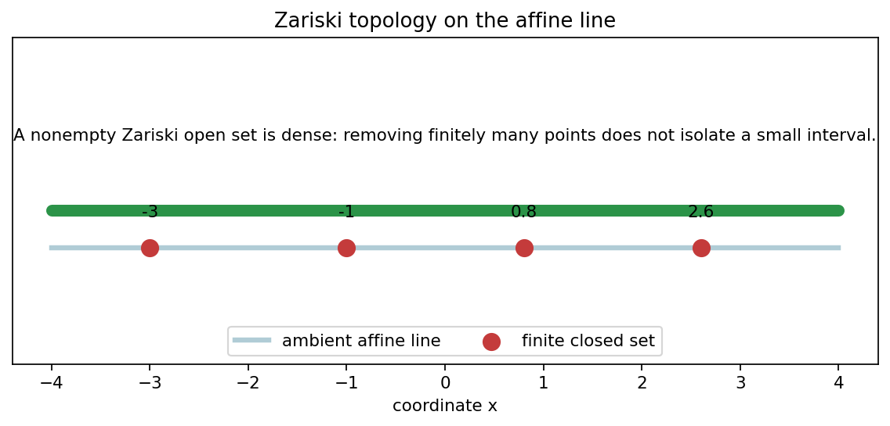
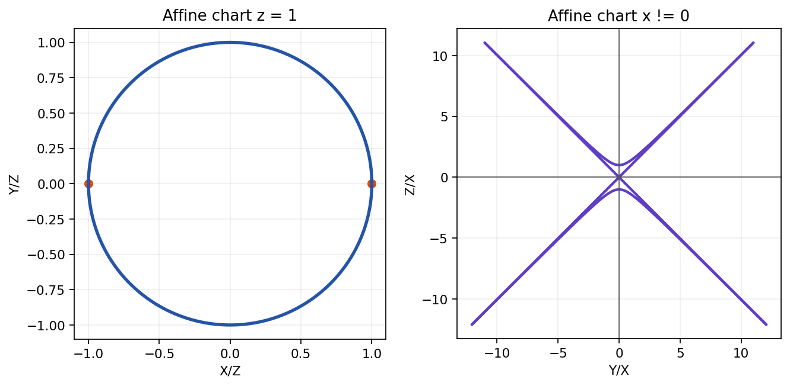
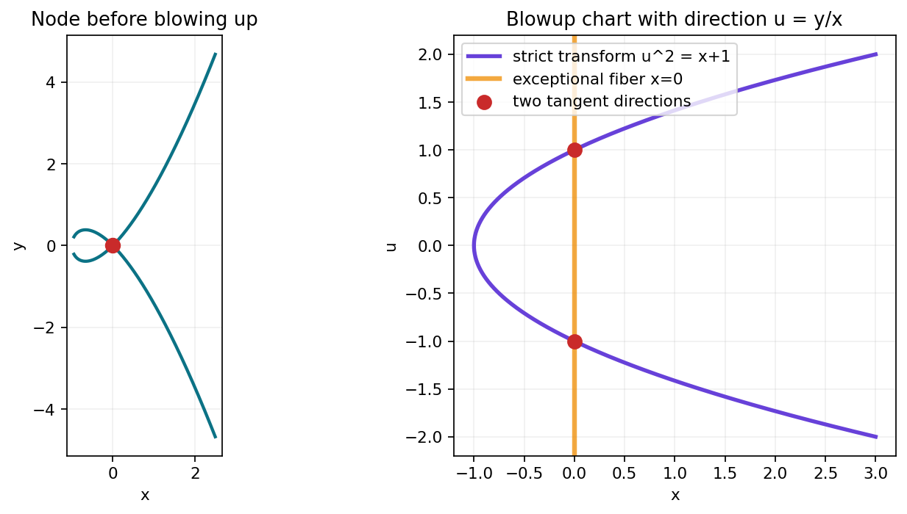
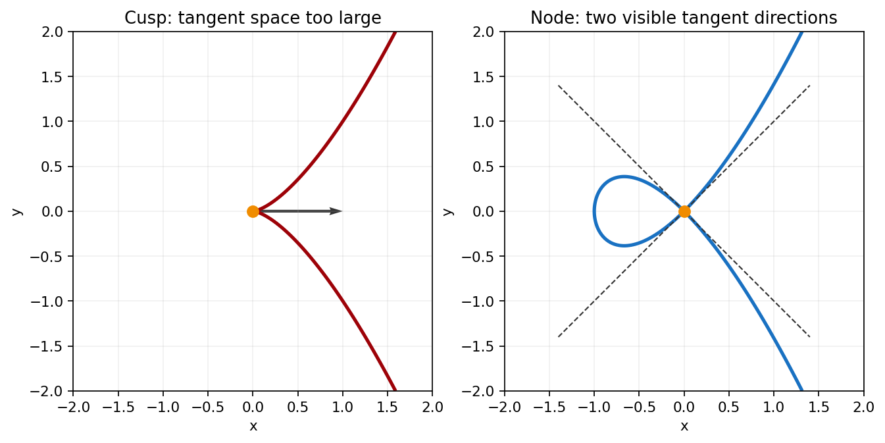

Chapter I builds the classical dictionary between polynomial equations and geometric objects.
Source grounding. Notebook: Algebraic-Geometry/chapter-01-varieties/01-varieties.ipynb. Source span: printed pages 1-59; PDF pages 16-74.
\(I(Z(\mathfrak a))=\sqrt{\mathfrak a}\) for an algebraically closed field \(k\).
The clean loop uses algebraic closure. Over smaller fields, rational points may not remember every geometric component.

Closed subsets of \(\mathbb A^1\) are finite sets or all of \(\mathbb A^1\). Nonempty opens are complements of finite closed sets.
If \(U=\mathbb A^1\setminus\{a_1,\dots,a_m\}\), then every nonzero polynomial vanishing on \(U\) must vanish everywhere.
The open set looks large in Euclidean space because algebraic openness records where finitely many denominators are allowed to be nonzero.
Irreducible closed subsets \(Y\subset \mathbb A^n\) correspond to prime ideals \(I(Y)\subset k[x_1,\dots,x_n]\).
\(\dim Y = \dim A(Y)\), the Krull dimension of the coordinate ring.
If \(f\in k[x_1,\dots,x_n]\) is irreducible, then \(Z(f)\) is an affine hypersurface.
\(f(x,y)=y^2-x^3+x\) gives a curve in \(\mathbb A^2\). Its degree controls generic line intersections.
One equation gives codimension one; two equations intersect by solving both. Degree becomes the bookkeeping device.

\([x_0:\cdots:x_n]=[\lambda x_0:\cdots:\lambda x_n]\) for \(\lambda\ne 0\).
If \(F\) has degree \(d\), then \(F(\lambda x)=\lambda^dF(x)\). The zero condition is scale-invariant.
The recorded homogeneous scaling residual is \(0\), so the conic equation respects projective scaling exactly.
On \(D_+(x_i)\), set \(x_i=1\) and rewrite every coordinate as a ratio \(x_j/x_i\).
A chart is not the whole projective object. It is a faithful affine window where local algebra can be performed.
When a point disappears from one chart, it should reappear in another. That is the atlas doing its job.
\(f\) is regular at \(P\) if near \(P\), \(f=g/h\) with \(h(P)\ne 0\).
\(\mathcal O_{P,Y}\) stores all such local quotients; \(K(Y)\) is the function field for irreducible \(Y\).
A quotient can be valid on one open patch and invalid at a point where its denominator vanishes.
For a morphism \(\varphi:X\to Y\), the pullback sends \(f\in A(Y)\) to \(\varphi^\#(f)=f\circ\varphi\in A(X)\).
Geometry moves \(X\to Y\). Coordinate rings move \(A(Y)\to A(X)\).
A rational map \(X\dashrightarrow Y\) is represented by a morphism \(U\to Y\) on some nonempty open \(U\subset X\).
Two representatives define the same rational map when they agree on a nonempty open subset of the overlap.
On the Zariski line, dense opens are complements of finite sets, so agreement there is algebraically rigid.

Set \(u=y/x\). The strict transform in this chart satisfies \(u^2=x+1\).
Over \(x=0\), the separated directions are \(u=\pm 1\).
blowup_node_tangent_directions gives \([-1, 1]\) in the final sanity artifact.

If \(Y=Z(f_1,\dots,f_r)\), then \(T_PY=\ker J(P)\), where \(J(P)\) is the Jacobian matrix at \(P\).
A point is singular when the tangent space is larger than the expected local dimension.
The cusp Jacobian at the origin is \([0,0]\), so first derivatives fail to cut the tangent space down.
\(Y\) is nonsingular at \(P\) exactly when the local ring \(\mathcal O_{P,Y}\) is regular.
The completed local ring packages the formal analytic type near \(P\), distinguishing smooth branches, nodes, and cusps.
For an irreducible curve \(C\), the function field \(K(C)\) has transcendence degree one.
At a nonsingular point \(P\), \(\mathcal O_{P,C}\) is a discrete valuation ring, and \(\operatorname{ord}_P(f)\) measures zeros and poles.
Divisors turn these local orders into global arithmetic on curves.
If \(Y,Z\subset \mathbb P^n\) have dimensions \(r,s\), then every component of \(Y\cap Z\) has dimension at least \(r+s-n\).
Proper plane curves of degrees \(m\) and \(n\) meet with algebraic count \(mn\), including multiplicities and points at infinity.
cubic-line-sweep-lab.html varies a line and records that a generic cubic intersection polynomial has degree \(3\).
Zero sets, ideals, coordinate rings, and Zariski topology.
Morphisms, rational maps, birational changes, and blowups.
Tangent spaces, local rings, regularity, and singular type.
Curves, valuations, intersections, degree, and multiplicity.